polycarpic — personal budgeting & wealth management (virtual Single Family Office)
What this product should feel like to use, and the principles that resolve design disputes.
#2CFF05, "the project name relates to fruiting plants") measures 1.36:1 against white, far below AA — kept as the literal --brand value everywhere it clears AA (dark surfaces), with a darkened same-hue green for light-mode --primary, stated plainly rather than silently swapped for a different hue — see Foundations.The single source of truth for the visual language. The written spec lives alongside this doc; the machine-readable system lives in the two CSS files that frontend-lead consumes directly.
Figma stays the high-fidelity design tool for anything shipping pixel-exact (via the ux-designer's Figma skills); docs/DESIGN/ is the in-repo, code-level home that ships with the project and is the contract for implementation.
Color, typography, spacing, radius, and shadow primitives — SvelteKit + shadcn-svelte (PRD §8). Edit values in tokens.css; the swatches below preview the live variables. Full rationale in design-system-spec.md — or see tokens.html for every token decoded with both-mode values and a "used for" line.
See design-system-spec.md § Financial semantics — gain/loss, safe-harbor status tiers, and the "never color alone" rule.
Dark-on-light in light mode, light-on-dark in dark mode — see design-system-spec.md § Sidebar for the collapse-to-rail behavior and three proposed expand/collapse cues.
Type: --font-sans Inter — one grotesque sans for body and headings, hierarchy by weight, confirmed against both reference products' actual app UI (their serif accent is marketing-only, see Inspiration); --font-mono Roboto Mono — Origin's own measured choice, for uppercase eyebrow labels, account numbers, tickers, tabular figures. Radius: measured --radius-sm|md|lg|xl = 6/8/12/20px (cards 12px, buttons 8px — both products' actual app-level values, not either's marketing-only pill).
The component inventory and the styles that realize it, built on the tokens. Styles live in screen.css; full states-per-component table lives in design-system-spec.md § Component inventory.
| Component | shadcn-svelte primitive | polycarpic usage |
|---|---|---|
| Net-worth hero | Chart (LayerChart, Area) | Big figure + signed delta on the figure + single-line area chart — direct Monarch pattern |
| Grouped account list | Table / custom | Type-grouped rows with sparkline + freshness — direct Monarch pattern |
| Segmented bar + legend | Custom, tokens-driven | Assets/Liabilities, allocation actual-vs-target — direct Monarch pattern |
| Badge | Badge | Entity/account/transaction status, link-health — see Financial semantics |
| Transaction table | Table | Account register, exceptions report, lots |
| Accordion | Accordion | Transactions' three urgency-ordered cards (Exceptions/Pending/Posted); Pending row expansion |
| Near-full-screen modal | Dialog | Journal-entry modal (header + legs) — manual entry, Correct entry, Split, Group & Summarize |
| Entity switcher | Tabs / Sidebar | Switch between Person/Trust/Business/Household |
| Transaction detail | Sheet | Drill into a posted/draft entry, its journal lines, source doc |
| Empty state | Card + plain text, no skeleton | Dashboard panels not yet shipped (tax at 1.0, allocation at M4) — see styled-screens/dashboard.html |
| Top row | —, starts right of the sidebar | Not sticky, same background as content: breadcrumb left (expand/collapse lives in the sidebar brand row); entity selector + separator + "more" menu right — AI/search/notifications/gear dropped — see design-system-spec.md § Header |
| Sidebar | Sidebar (shadcn-svelte sidebar-07 block) | Floating card, gutter + rounded all 4 corners, seven nav items, brand top item carrying the expand/collapse control (panel-left-close right-aligned; collapsed, the mark swaps to panel-left-open on hover/focus), avatar-popover bottom item opening right — see design-system-spec.md § Sidebar |
| "More" menu | DropdownMenu | Top row, right-justified — per-page global actions (Sync, New entry, Export, ...) |
| Avatar cluster | —, custom | Overlapping initials in the entity selector, max 3 + overflow |
| Avatar popover | Popover / DropdownMenu | User menu at the sidebar's bottom, opens to the right — profile, Settings (proposed), Notifications (proposed), preferences, theme, keyboard shortcuts, Log out last |
| Landing illustration | —, custom | Home — the mountains illustration under the brand app bar, then headline, subhead and feature cards; not a signed-in screen |
| Switch | Switch | Settings on/off preferences (auto-post matched recurring transactions, reduced motion) |
| Chart-of-accounts tree | —, custom (nested disclosure rows) | General Ledger: group rows with chevrons, account rows link to the register, custodial cross-reference badge |
| Brand app bar | —, custom | Every page without the app shell (Home, Membership setup, Admin): fixed near-black bar, neon lockup left, the page's trailing items right, a fade below (deep over Home's image, a short shadow over plain pages) |
| Split screen login | —, custom | Login — full field list, centered form column, always-branded visual pane |
How users move through the product to accomplish the highest-traffic stories (PRD §4). Each flow is embedded inline below, because a browser serves flows/*.md as raw Markdown and its fenced mermaid blocks would never reach the page's Mermaid loader. The .md files stay as the diffable source of truth in flows/.
Story (PRD §4.1): per-entity financial health at a glance. Source: flows/dashboard-glance-flow.md.
flowchart TD
start([User logs in]) --> membership{Holds membership\non 1+ entity?}
membership -- no --> empty[Membership-setup page:\nno entities yet, create or accept invite]
membership -- yes --> default[Land on default entity\nlast-viewed or first by role]
default --> render[Render dashboard:\nbalances, cash flow, recent activity,\npending tax liability, allocation snapshot]
render --> loading{Data cached?}
loading -- no --> skeleton[Skeleton matches real layout\nno spinner]
skeleton --> render
render --> switch{Switch entity?}
switch -- yes --> picker[Entity switcher\nPerson / Trust / Business / Household]
picker --> filtered[Re-render scoped to\nuser's membership on that entity]
filtered --> render
switch -- no --> drill{Drill into a number?}
drill -- yes --> source[Navigate to source:\nledger line, lot, or liability detail]
drill -- no --> idle([Glance complete])
Story (PRD §4.2): staged for review → matched/split/grouped → posted → correctable. Source: flows/import-confirm-flow.md. The review mechanics below follow a Plaid bank-feed workflow: every imported transaction is reviewed, matched, split or grouped, then posted.
flowchart TD
poll([Plaid adapter polls\nor fake source generates batch]) --> stage[Raw transaction lands\nin the Pending card]
stage --> transfer{Two legs match\nwithin date window?}
transfer -- same posting date --> autoEntry[Locked debit leg +\nsuggested offset leg\ntwo-line preview]
transfer -- different dates --> citEntry[Two entries via\nCash in Transit clearing account]
transfer -- unmatched --> openItem[Remains a single-leg\nPending row]
openItem --> aging{Older than\nexceptions threshold\ndefault 3 business days?}
aging -- yes --> exceptions[Surface on\nExceptions card]
aging -- no --> stage
citEntry --> autoEntry
autoEntry --> expand[User expands the row:\nAuto-Suggest Match view]
expand --> action{User action}
action -- edit offset --> editLeg[Inline search dropdown:\noverride the suggested account]
editLeg --> action
action -- split --> splitGrid[Split grid:\nadd offsetting rows]
splitGrid --> liveCheck{Split sum equals\nthe Plaid total?}
liveCheck -- no --> splitGrid
liveCheck -- yes --> post
action -- group --> bulkSelect[Checkbox-select rows,\nbulk action bar appears]
bulkSelect --> groupModal[Group and Summarize modal:\npre-filled entry, one aggregate\nline + balancing distributions]
groupModal --> post
action -- approve --> post[User hits Approve and Post]
post --> gate{Posting gate:\nbalanced, accounting equation,\ndate match, one entry per draft}
gate -- fail --> stage
gate -- pass --> commit[Row fades out of Pending;\nbalanced entry commits to the GL]
commit --> toast[Toast: entry posted]
commit --> posted([Appears on Posted,\npaged])
exceptions --> resolve{Resolved manually?}
resolve -- yes --> post
resolve -- no --> exceptions
posted --> correctQ{User clicks\nCorrect entry?}
correctQ -- yes --> doCorrect[System posts the reversal\n+ the new corrected entry\nuser never sees reverse as the verb]
doCorrect --> correctedBadge[Row now shows\nCorrected badge]
correctedBadge --> clickThrough[Click-through: original lines\nshaded/struck + reversal + new entry]
correctQ -- no --> complete([Flow complete])
clickThrough --> complete
Corrected badge (--outline + --brand-2-tinted dot, pencil icon); click-through reveals the full double-entry trail — original lines shaded/struck, the reversal, and the new entry. An auto-posted row carries the same badge/action plus a posted by rule — <name> line.Story (PRD §4.4): pending liability, required payment, gap, pay. Source: flows/tax-liability-flow.md.
flowchart TD
view([Open Tax Liability view\nfor entity + jurisdiction]) --> accrual[Running accrual annualizes\nincome to date by tax treatment]
accrual --> pending[Pending liability =\nannualized tax to date minus\ncustodial prepaid balance]
accrual --> safeharbor[Two safe-harbor bases computed:\nprior-year and current-year]
safeharbor --> required[Required payment to date =\nlesser of the two safe-harbor bases]
required --> gap[Gap = required payments to date\nminus custodial balance,\nare you current with the authority]
pending --> display[Display gauge + figures]
gap --> tier{Gap status}
tier -- "gap <= 0" --> onTrack[Tier: Normal / on track\npositive token]
tier -- "gap > 0, due date > 14d out" --> caution[Tier: Caution\nwarning token]
tier -- "gap > 0, due date passed" --> danger[Tier: Danger / overdue\ndestructive token]
onTrack --> display
caution --> display
danger --> display
display --> extPay[User pays the tax authority\nat their own bank, the app\nnever initiates a payment]
extPay --> imported[Payment appears as an imported\nbank transaction, no counterparty]
imported --> postEntry[User posts the GL entry:\ndebit the tax-authority custodial\naccount, pending liability itself\ndoes not change, not filed yet]
postEntry --> accrual
display --> waitNode([Wait for next period cutoff])
waitNode --> freeze[Period cutoff freezes\nannualized figure for due date]
freeze --> accrual
required − pending.Stories (PRD §4.5–4.7): GL vs. custodial reconciliation, allocation vs. target. Source: flows/securities-lots-flow.md. Lots are a Custodial Accounts sub-card, GL vs. custodial is two nav items rather than a toggle, and Allocation is its own page.
flowchart TD
view([Open Custodial Accounts\nfor entity]) --> accounts[Per-account cards:\nreported balance, link-health badge]
accounts --> lotsCard[Lots sub-card per security:\npull-down shows lots,\nshort/long/total gain per lot + summed]
lotsCard --> priceFeed[Daily EOD price feed\nupdates market value]
priceFeed --> lotsCard
accounts --> reconcile[Reconcile GL balance\nagainst custodian-reported balance]
reconcile --> match{Balances match\nwithin tolerance?}
match -- yes --> clean[Reconciliation: clean\npositive tier]
match -- no --> break[Reconciliation: break\ndanger tier, flagged]
clean --> glLink[General Ledger account register\nshows the same balance, GL side]
break --> glLink
glLink --> allocLink([Allocation: actual vs. target,\nits own nav item])
allocLink --> adjust{User adjusts target?}
adjust -- yes --> saveTarget[Save new target allocation]
saveTarget --> allocLink
adjust -- no --> done([View complete])
Tabs switch.--destructive) and must surface on the Dashboard glance too.Story (PRD §4.8): owner/manager/viewer boundary. Source: flows/entity-membership-flow.md.
flowchart TD
login([User logs in]) --> memberships[Load user's memberships:\nentity, role]
memberships --> list{More than one\nentity?}
list -- no --> single[Land directly on the\none entity, no switcher shown]
list -- yes --> switcher[Entity switcher in header:\nlist entities by membership]
switcher --> select[User selects an entity]
select --> roleCheck{Role on\nselected entity}
roleCheck -- owner --> ownerView[Full read/write:\npost, edit memberships, purge]
roleCheck -- manager --> managerView[Read/write ledger,\nno membership/purge rights]
roleCheck -- viewer --> viewerView[Read-only:\nbalances, activity, statements]
ownerView --> guard{Parent-entity\nstructure implies access?}
managerView --> guard
viewerView --> guard
guard -- "no (always)" --> explicit[Only explicit membership\ngrants access, never inherited]
explicit --> render([Render scoped dashboard])
Every page, rendered with the real design system: tokens.css + screen.css, the sidebar-07 shell, and Lucide icons. These are the visual-regression reference and the head start for frontend-lead. There is one fidelity tier: every page is a styled screen. Each screen supports light and dark (.dark on <html>) and is checked at 960px and 1280px. Click a screen to open it; the sidebar nav links between them.
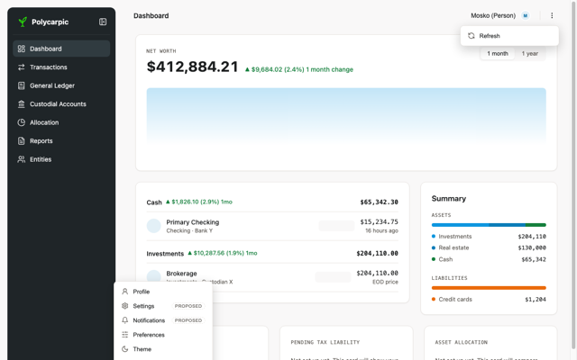
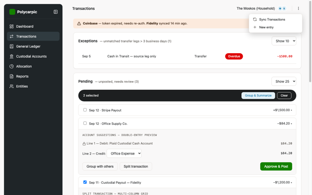
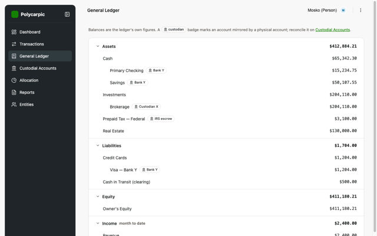
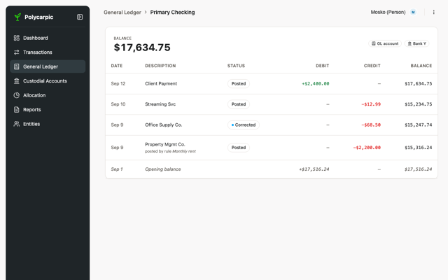
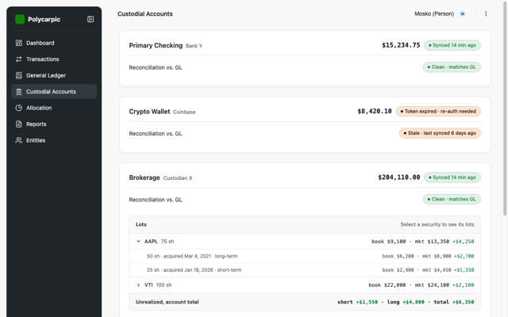
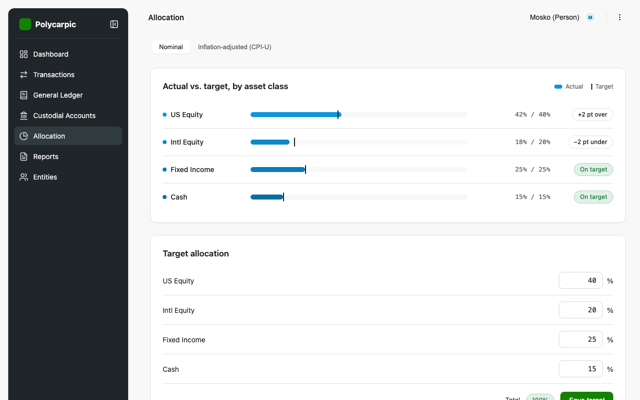
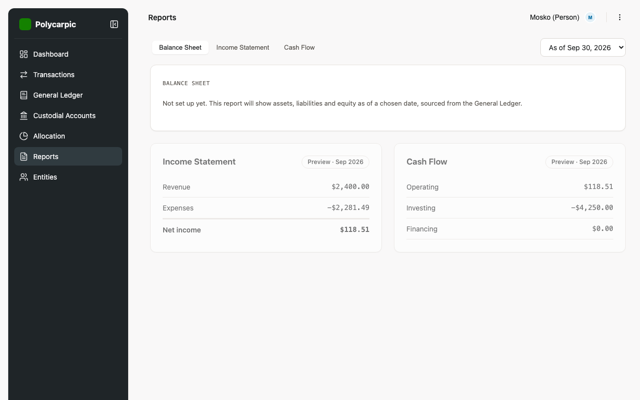
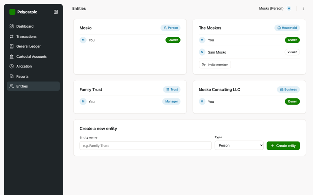
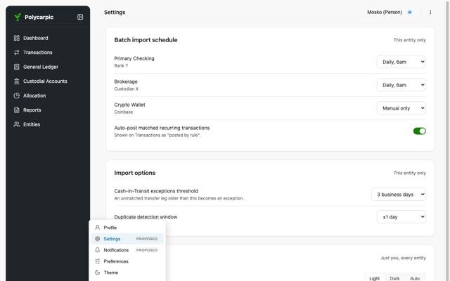
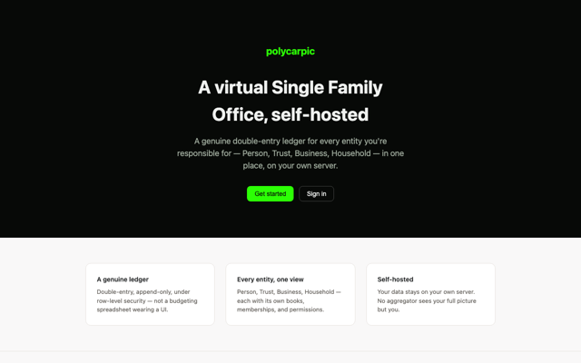
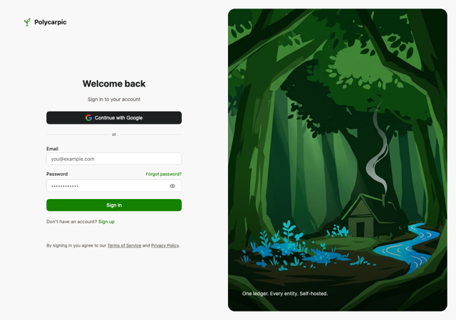
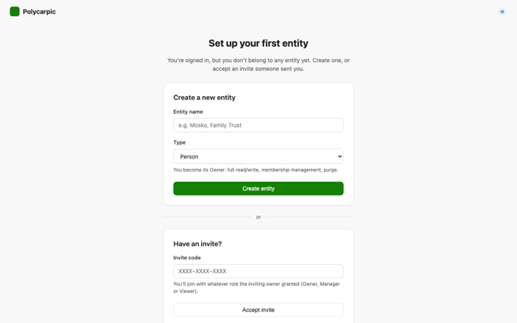
Whether the forest pane carries a caption, and which. Login above keeps the current caption until one is chosen. Recommended: B. It is one short line in display weight that ties the seedling mark and the forest to what the product is for. A is the safe fallback: the image carries the pane alone.
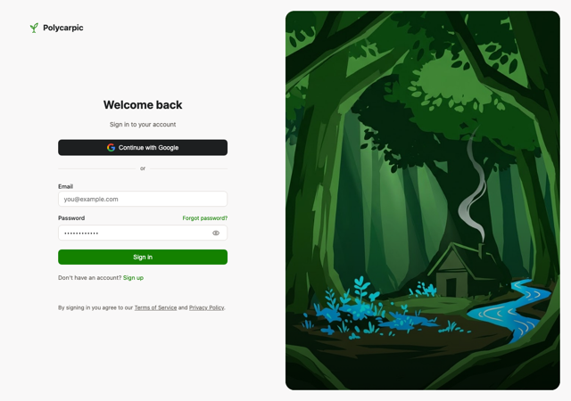
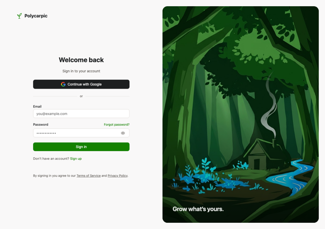
Not reachable from any in-app nav and not part of the seven-item IA. Operator-only, reached by SSH tunnel to the host.
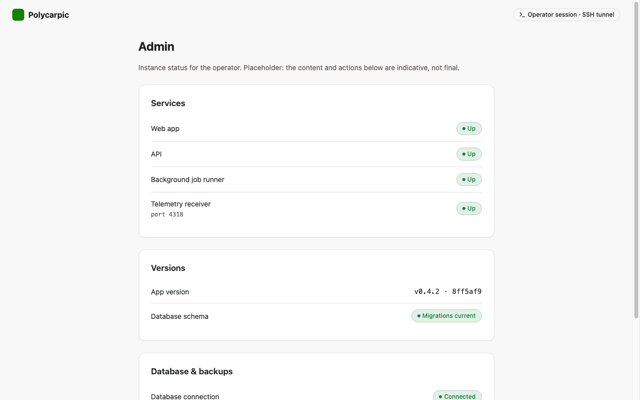
Accessibility is a design responsibility, not a QA afterthought. Full table in design-system-spec.md § Accessibility.
| Concern | Standard / approach |
|---|---|
| Color contrast | WCAG AA (4.5:1 text, 3:1 large/UI) — every token pair measured, both modes; --brand deliberately fails against light surfaces (1.36:1, by design — never used there, see Foundations); no CVD simulation run yet (open item, high priority given how central the brand hues are) |
| Color-alone signaling | Never — every gain/loss/status pairs color with a sign/icon/label |
| Keyboard | All interactive elements reachable & operable (shadcn default) |
| Screen readers | Semantic markup; labelled controls; delta sign readable from text content |
| Motion | Respect prefers-reduced-motion (policy not yet written) |
Unresolved design decisions and assumptions that could be wrong. Batched to team-lead for relay to the Principal — not blocking.
prototype/ throwaway UX prototype (kickoff §2.9) not yet built — confirm ownership/timing with team-lead.docs/DESIGN/comments.md with ## §<section-id> blocks, or run /serve-docs DESIGN and use the inline + Comment widget. Then run /refine-doc DESIGN. See process/WORKFLOW.md → Doc review loop.docs/DESIGN/ and not in the app's source?frontend-lead imports or derives the app's real stylesheets from tokens.css/screen.css.variants.css go?cairn tracker tool's own theme switcher, never part of the product — removed from this directory (POLY-78 relocates its generator target the same way). See design-system-spec.md § Provenance & shared tooling.